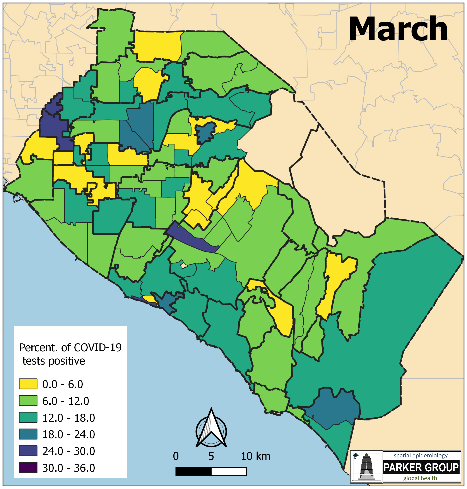
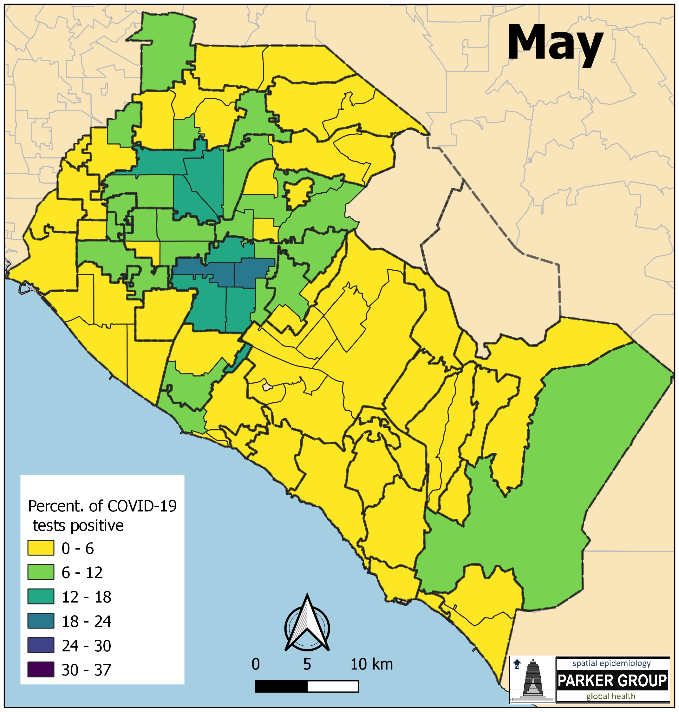
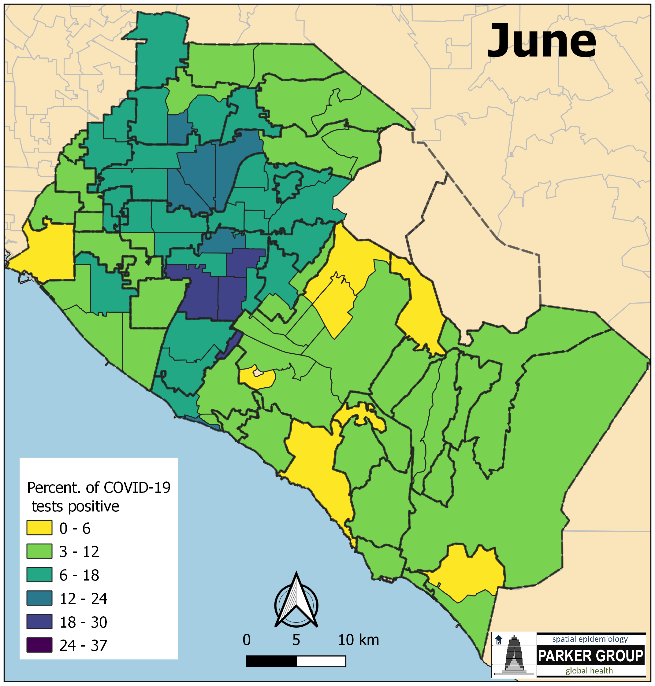
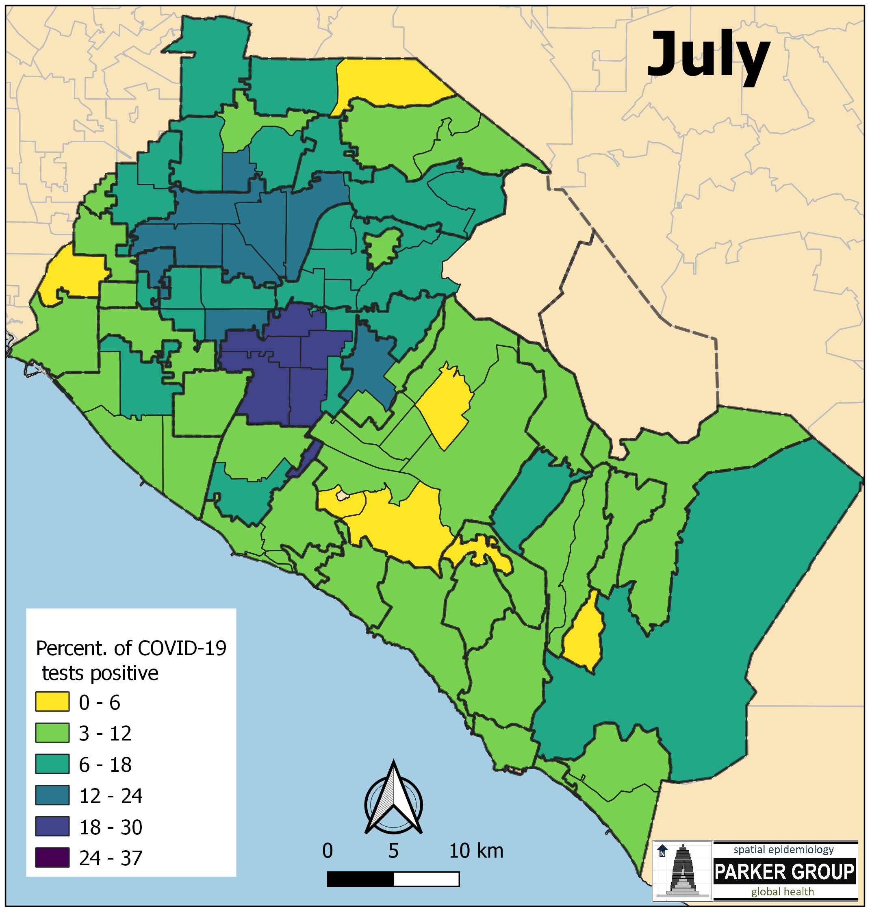
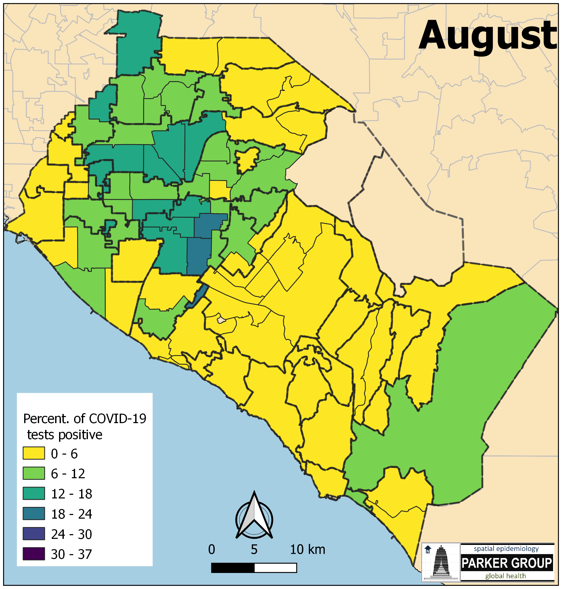

COVID-19 Maps by UCI Statistics
Last updated: 2020-09-10
Checks: 7 0
Knit directory: uci_covid19_dashboard/
This reproducible R Markdown analysis was created with workflowr (version 1.6.2). The Checks tab describes the reproducibility checks that were applied when the results were created. The Past versions tab lists the development history.
Great! Since the R Markdown file has been committed to the Git repository, you know the exact version of the code that produced these results.
Great job! The global environment was empty. Objects defined in the global environment can affect the analysis in your R Markdown file in unknown ways. For reproduciblity it’s best to always run the code in an empty environment.
The command set.seed(20200714) was run prior to running the code in the R Markdown file. Setting a seed ensures that any results that rely on randomness, e.g. subsampling or permutations, are reproducible.
Great job! Recording the operating system, R version, and package versions is critical for reproducibility.
Nice! There were no cached chunks for this analysis, so you can be confident that you successfully produced the results during this run.
Great job! Using relative paths to the files within your workflowr project makes it easier to run your code on other machines.
Great! You are using Git for version control. Tracking code development and connecting the code version to the results is critical for reproducibility.
The results in this page were generated with repository version 51bc9d4. See the Past versions tab to see a history of the changes made to the R Markdown and HTML files.
Note that you need to be careful to ensure that all relevant files for the analysis have been committed to Git prior to generating the results (you can use wflow_publish or wflow_git_commit). workflowr only checks the R Markdown file, but you know if there are other scripts or data files that it depends on. Below is the status of the Git repository when the results were generated:
Ignored files:
Ignored: .Renviron
Untracked files:
Untracked: r_env.yml
Untracked: rebuild
Note that any generated files, e.g. HTML, png, CSS, etc., are not included in this status report because it is ok for generated content to have uncommitted changes.
These are the previous versions of the repository in which changes were made to the R Markdown (analysis/positivity-maps.Rmd) and HTML (docs/positivity-maps.html) files. If you’ve configured a remote Git repository (see ?wflow_git_remote), click on the hyperlinks in the table below to view the files as they were in that past version.
| File | Version | Author | Date | Message |
|---|---|---|---|---|
| html | 51bc9d4 | markellekelly | 2020-09-09 | automatic update - 2020-09-09 |
| html | 0c63951 | markellekelly | 2020-09-08 | automatic update - 2020-09-08 |
| html | cb3b11a | markellekelly | 2020-09-07 | automatic update - 2020-09-07 |
| html | ac05fe5 | markellekelly | 2020-09-06 | automatic update - 2020-09-06 |
| html | b42a33b | markellekelly | 2020-09-05 | automatic update - 2020-09-05 |
| html | a61fdd8 | markellekelly | 2020-09-04 | automatic update - 2020-09-04 |
| Rmd | 27325c6 | Damon Bayer | 2020-09-03 | August Maps |
| html | 27325c6 | Damon Bayer | 2020-09-03 | August Maps |
| html | e2709b0 | markellekelly | 2020-09-03 | automatic update - 2020-09-03 |
| html | 5296774 | markellekelly | 2020-09-02 | automatic update - 2020-09-02 |
| html | 6048fdf | markellekelly | 2020-09-01 | automatic update - 2020-09-01 |
| html | a27d38f | markellekelly | 2020-08-31 | automatic update - 2020-08-31 |
| html | 74ceb0a | markellekelly | 2020-08-30 | automatic update - 2020-08-30 |
| html | 44a84ad | markellekelly | 2020-08-29 | automatic update - 2020-08-29 |
| html | 33918be | markellekelly | 2020-08-28 | automatic update - 2020-08-28 |
| html | c2d1536 | markellekelly | 2020-08-27 | automatic update - 2020-08-27 |
| html | c96e3f3 | vnminin | 2020-08-27 | consistent message above trend plots |
| html | cf421b9 | markellekelly | 2020-08-26 | automatic update - 2020-08-26 |
| html | 9d099cd | vnminin | 2020-08-25 | short dropdown menu names |
| html | 726e8dc | markellekelly | 2020-08-25 | automatic update - 2020-08-25 |
| html | e239a00 | vnminin | 2020-08-24 | added a note about dropdown menus |
| html | 518db49 | Rachel Longjohn | 2020-08-24 | Merge branch ‘master’ into county-sets |
| html | 2559f5d | Rachel Longjohn | 2020-08-24 | add more county sets |
| html | b79277f | markellekelly | 2020-08-24 | automatic update - 2020-08-24 |
| html | f932f34 | markellekelly | 2020-08-23 | automatic update - 2020-08-23 |
| html | eaad166 | markellekelly | 2020-08-22 | automatic update - 2020-08-22 |
| html | 8b79b5e | vnminin | 2020-08-21 | added Andrew as an additional media contact |
| html | f30d34d | markellekelly | 2020-08-21 | automatic update - 2020-08-21 |
| html | 7069376 | markellekelly | 2020-08-20 | automatic update - 2020-08-20 |
| html | 223088a | markellekelly | 2020-08-19 | automatic update - 2020-08-19 |
| html | 64a83bf | markellekelly | 2020-08-18 | automatic update - 2020-08-18 |
| html | ae98627 | vnminin | 2020-08-14 | daily date pull |
| html | 24e4ed4 | vnminin | 2020-08-13 | data update |
| html | 616ee7e | vnminin | 2020-08-12 | daily data update |
| html | 8db6eb5 | vnminin | 2020-08-11 | pushed a note about reporting system problems |
| html | 0803f2b | vnminin | 2020-08-11 | data update |
| html | 19f2315 | vnminin | 2020-08-10 | push with updated data |
| html | a5927e7 | vnminin | 2020-08-09 | rebuilding with new data |
| html | fb0028a | vnminin | 2020-08-08 | ca portal got data |
| html | 9589b6d | vnminin | 2020-08-07 | two time stamps |
| html | 60756e0 | Damon Bayer | 2020-08-07 | data update |
| html | b3f0a7a | vnminin | 2020-08-06 | rebuilding to fix testing not linking to itself |
| html | 35e30c1 | vnminin | 2020-08-06 | daily data update; I am a good robot |
| html | 7334400 | vnminin | 2020-08-05 | data update |
| html | 6466f12 | vnminin | 2020-08-04 | data pull and fixed the last date being cut off |
| html | 5db0d2e | vnminin | 2020-08-03 | data update |
| html | 4afb037 | vnminin | 2020-08-02 | forgot to republish |
| html | e3847ed | vnminin | 2020-08-02 | added testing maps |
| Rmd | a2c2c61 | vnminin | 2020-08-01 | added Software section to About |
| html | a2c2c61 | vnminin | 2020-08-01 | added Software section to About |
| Rmd | 51fac09 | vnminin | 2020-08-01 | added page headers to incidence and positive maps |
| html | 51fac09 | vnminin | 2020-08-01 | added page headers to incidence and positive maps |
| Rmd | e024ad3 | Damon Bayer | 2020-07-31 | Positivity Maps + Navigation Updates |
| html | e024ad3 | Damon Bayer | 2020-07-31 | Positivity Maps + Navigation Updates |
Fraction of positive COVID-19 tests mapped to OC zip codes







Data provided by the Orange County Health Care Agency.
Last updated 2020-07-29.
sessionInfo()R version 3.6.1 (2019-07-05)
Platform: x86_64-conda_cos6-linux-gnu (64-bit)
Running under: Ubuntu 18.04.5 LTS
Matrix products: default
BLAS/LAPACK: /home/kmarke/anaconda3/envs/issue-216/lib/libopenblasp-r0.3.10.so
locale:
[1] LC_CTYPE=en_US LC_NUMERIC=C LC_TIME=en_US
[4] LC_COLLATE=en_US LC_MONETARY=en_US LC_MESSAGES=en_US
[7] LC_PAPER=en_US LC_NAME=C LC_ADDRESS=C
[10] LC_TELEPHONE=C LC_MEASUREMENT=en_US LC_IDENTIFICATION=C
attached base packages:
[1] stats graphics grDevices utils datasets methods base
loaded via a namespace (and not attached):
[1] Rcpp_1.0.5 whisker_0.4 knitr_1.29 magrittr_1.5
[5] workflowr_1.6.2 R6_2.4.1 rlang_0.4.7 stringr_1.4.0
[9] tools_3.6.1 xfun_0.16 git2r_0.27.1 htmltools_0.5.0
[13] ellipsis_0.3.1 yaml_2.2.1 digest_0.6.25 rprojroot_1.3-2
[17] tibble_3.0.3 lifecycle_0.2.0 crayon_1.3.4 later_1.1.0.1
[21] vctrs_0.3.2 fs_1.5.0 promises_1.1.1 glue_1.4.1
[25] evaluate_0.14 rmarkdown_2.3 stringi_1.4.6 compiler_3.6.1
[29] pillar_1.4.6 backports_1.1.8 httpuv_1.5.4 pkgconfig_2.0.3